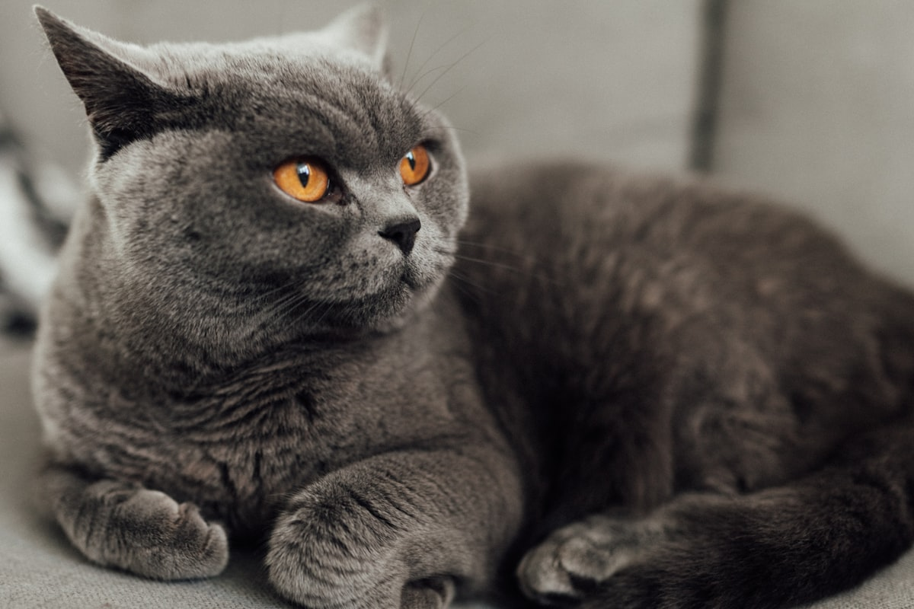

브리티시 숏헤어 수명 9.6년, 그 근거 — 성격·질병·관리 가이드

브리티시 숏헤어의 기대수명은 영국 VetCompass 사망기록 7,936건을 분석한 Teng 등(2024)의 자료에서 9.58년(브리티시 계열 194마리)으로, 믹스 11.89년보다 2년 이상 짧고 순종 중에서도 하위권입니다. 웹에 흔한 "12~15년"은 출처가 붙은 것을 찾지 못했습니다. 둥근 얼굴과 통통한 볼이 매력적인 이 품종은 독립적이고 느긋한 성격으로 혼자 있는 시간을 잘 견뎌 1인 가구에 특히 잘 맞지만, 비만과 심장·신장 유전병이 수명을 깎는 품종이에요. 수명의 근거, 국내 진료기록에서의 위치, 성격, 질병, 관리까지 정리했습니다.
한눈에 보는 브리티시 숏헤어
| 크기 | 중형~대형 (수컷은 약 7.7kg, 17파운드까지 자라기도 — CFA 품종 설명) |
|---|---|
| 수명 | 영국 자료 기대수명 9.58년 (95% 신뢰구간 8.73~10.43, 사망 194마리) · 국내 품종별 수치 없음 |
| 털 | 단모, 촘촘한 이중모 (환모기 빗질) |
| 성격 | 독립적·느긋, 안정적 |
| 활동량 | 낮음~중간 |
| 초보자 적합도 | 높음 |
수명과 국내 진료 데이터 — 숫자로 보는 브리티시 숏헤어
"브리티시 숏헤어 수명 12~15년" 같은 숫자가 웹에 많이 돌지만, 출처가 붙은 것은 거의 없습니다. 이 글은 품종별 사망 연령을 실제로 집계한 자료만 씁니다. 그런 자료는 지금 영국에 하나 있고, 국내에는 품종별 수명 통계가 아직 없습니다. 대신 국내 진료기록 두 편으로 이 품종이 어디쯤 있는지 가늠할 수 있습니다.
영국 자료: 기대수명 9.58년, 12개 품종군 중 10번째
영국 1차 진료 네트워크 VetCompass 의 2019년 사망기록 7,936건을 분석한 Teng 등(2024, J Feline Med Surg)에서 브리티시 계열(브리티시 블루·브리티시 롱헤어 포함, 사망 194마리)의 출생 시 기대수명은 9.58년(95% 신뢰구간 8.73~10.43)이었습니다. 같은 자료의 믹스 11.89년, 전체 평균 11.74년보다 2년 이상 짧고, 사망 기록 15마리 이상인 12개 품종군 가운데 벵갈(8.51년)·스핑크스(6.68년) 다음으로 짧은 10번째입니다.
| 품종 (영국 VetCompass 2019 사망기록) | 출생 시 기대수명 | 사망 수 |
|---|---|---|
| 버미즈 | 14.42년 | 45 |
| 믹스(교잡종) | 11.89년 | 7,117 |
| 페르시안 | 10.93년 | 80 |
| 랙돌 | 10.31년 | 69 |
| 메인쿤 | 9.71년 | 69 |
| 브리티시 계열 | 9.58년 (8.73~10.43) | 194 |
| 벵갈 | 8.51년 | 73 |
| 스핑크스 | 6.68년 | 18 |
같은 논문은 수명을 깎는 요인도 짚습니다. 순종은 믹스보다 3세 이전에 죽을 확률이 1.83배 높았고, 품종·성별 중앙값 체중에서 100g 벗어날 때마다(과체중이든 저체중이든) 수명이 0.02년씩 줄었으며, 중성화한 고양이가 안 한 고양이보다 1.07년 더 살았습니다. 살이 잘 찌는 브리티시에게 체중 관리가 곧 수명 문제인 이유가 여기 있습니다.
국내 30개 동물병원 진료기록: 456건, 1.39%
국내 30개 동물병원의 2016~2017년 고양이 진료기록 32,728건을 분석한 Lee 등(2022, J Vet Clin)에서 브리티시 숏헤어는 456건(1.39%)이었습니다. 코리안 숏헤어 40.5%, 페르시안 10.3%, 스코티시 폴드 7.7%, 러시안 블루 7.6% 순인 상위권과 거리가 멀고, 벵갈(893건)·먼치킨(794건)· 아메리칸 숏헤어(788건)보다도 적어 "기타" 18.0% 안에 묶였습니다. 그래서 이 논문의 품종별 질환 분포표(상위 7개 품종)에는 브리티시 숏헤어 행이 없습니다. 국내에서 이 품종만의 질병 통계는 아직 발표된 것이 없다는 뜻입니다.
주의할 점은 이 비중이 "인기"가 아니라 "병원 방문" 비중이라는 것입니다. 진료기록에 잡힌 고양이 전체의 77.6%가 4세 미만, 평균 나이 2.5세였고, 가장 흔한 진료 사유는 예방접종·건강검진 같은 예방 목적(26.0%), 그다음이 소화기 질환(18.7%)이었습니다. 브리티시 456건도 대부분 이런 젊은 고양이의 일상 진료였을 가능성이 높습니다.
서울 사망기록: 순종이 믹스보다 오래 산다는 결과, 그러나
서울 6개 동물병원의 2004~2022년 사망기록으로 만든 Yang 등(2025, Front Vet Sci)의 고양이 1,213마리 분석에서는 영국과 반대로 순종(575마리)의 중앙 생존 1,827일(약 5년)이 믹스(638마리)의 1,012.5일(약 2.8년)보다 길었습니다. 품종별 수치는 없어 브리티시만 따로 볼 수는 없습니다.
이 숫자를 "한국 순종 고양이는 5년 산다"로 읽으면 안 됩니다. 병원에서 사망이 확인된 개체만 표본이라 지금 살아 있는 고양이는 아예 빠졌고, 저자들도 아픈 동물이 과대 대표됐을 가능성을 밝혔습니다. 믹스가 짧게 나온 이유로는 국내 고양이 보호자의 20.6%가 길고양이를 데려와 키운다는 2018년 농림축산식품부 조사를 들며, 길에서 온 고양이가 감염병·외상 위험을 안고 들어오기 때문이라고 설명합니다. 순종이 튼튼해서가 아니라 비교 대상이 다른 것입니다.
성격과 기질
브리티시 숏헤어를 처음 겪는 사람들이 공통으로 하는 말이 "반응이 한 박자 느리다"는 것입니다. 새 물건을 들여놓거나 낯선 사람이 오면 도망치지도, 달려들지도 않고 몇 걸음 떨어진 곳에서 한참을 지켜봅니다. 그러다 별일 없다고 판단되면 아무 일 없었다는 듯 원래 자리로 돌아가요. 겁이 많은 게 아니라 확인하고 나서 움직이는 방식입니다.
표현하는 방식도 조용합니다. 울음소리를 자주 내지 않고, 원하는 것이 있으면 앞발로 툭툭 건드리거나 문 앞에 앉아 기다리는 식으로 알립니다. 이 신호를 놓쳐도 두 번 조르지 않고 물러나는 개체가 많으니, 평소 안 가던 자리에 앉아 있다면 한 번쯤 눈여겨보세요.
다른 동물과의 관계는 싸우지도, 어울리지도 않는 쪽에 가깝습니다. 먼저 시비를 걸지 않아 합사 자체는 무난한 편이지만, 서로 그루밍해주고 붙어 자는 사이를 기대하고 두 마리를 들이면 실망할 수 있어요. "심심할 테니 친구를 만들어주자"는 접근은 이 품종에는 잘 맞지 않습니다.
입양 전 현실 체크 (비용·공간·부재 시간)
유지비만 놓고 보면 브리티시 숏헤어는 손이 덜 가는 축에 듭니다. 단모라 미용실에 갈 일이 없어 고정 지출이 하나 통째로 빠지거든요. 대신 다른 데서 품이 듭니다.
| 항목 | 대략적인 월 비용 | 메모 |
|---|---|---|
| 사료 | 3~6만 원 | 체중 관리용 사료로 바꾸면 조금 올라갑니다 |
| 모래 | 2~3만 원 | |
| 미용 | 0원 | 발톱 정리 정도만 집에서 |
| 병원(연 비용 분할) | 2~4만 원 | 연 1회 검진 기준 |
무난한 달이면 월 7~13만 원 선입니다. 다만 유전 질환 검진을 챙기는 품종이라 심장 초음파를 받는 해에는 10~25만 원가량이 따로 나갑니다. 병원마다 편차가 크니 검진 항목과 비용을 미리 확인해두면 계획 세우기가 쉽습니다.
공간보다 중요한 건 바닥과 청소
활동량이 낮고 높은 데로 뛰어오르는 걸 즐기지 않아 원룸에서도 충분히 잘 지냅니다. 천장까지 닿는 캣타워보다 창밖이 보이는 낮은 자리 하나가 더 사랑받아요. 대신 각오할 것은 털입니다. 짧고 뻣뻣한 털이 옷과 소파 천에 그대로 박히기 때문에, 돌돌이와 청소기 쓰는 빈도가 확실히 늘어납니다.
혼자 두는 시간에 대한 내성
이 품종의 가장 큰 장점입니다. 사람이 없는 낮 시간을 스스로 잘 보내는 편이라 출근해서 퇴근할 때까지의 부재도 무리 없이 견디는 경우가 많습니다. 다만 "혼자 잘 논다"와 "방치해도 된다"는 다릅니다. 다음 세 가지는 갖춰두세요.
- 화장실은 마리 수 +1개, 서로 떨어진 위치에
- 물그릇은 밥그릇과 떨어뜨려 두 곳 이상
- 혼자 사냥하듯 먹을 수 있는 먹이 퍼즐 하나
주의해야 할 질병
- 비대성 심근병증(HCM) — 고양이에게 가장 흔한 심장 질환으로, 코넬대 고양이건강센터는 브리티시 숏헤어를 메인쿤·랙돌·스핑크스와 함께 호발 품종으로 꼽습니다. 문제는 검사입니다. 메인쿤·랙돌에서 찾은 원인 유전자 변이가 브리티시에는 해당하지 않는다는 것이 확인돼 브리티시용 유전자 검사가 아직 없고, 영국 동물복지 단체 UFAW 는 이 품종의 유병률 자료 자체가 없다고 밝히면서 번식묘라면 2세부터 매년 심초음파로 선별할 것을 권합니다 (UFAW 브리티시 숏헤어 HCM). 많은 개체가 겉으로 아파 보이지 않으니 반려묘도 심초음파 없이는 알 수 없습니다.
- 다낭성 신장질환(PKD) — 페르시안에서 가장 흔하고 브리티시 숏헤어에서도 간혹 나타나는 유전병입니다 (코넬대 PKD 안내). 유전자 검사로 보인자를 걸러낼 수 있지만 얼마나 심한지는 초음파로만 알 수 있으니, 분양 시 부모묘 검사 이력을 확인하세요. (신부전 초기 증상)
- 비만 — 체질상 살이 잘 쪄 관절·당뇨 문제로 이어질 수 있고, 위의 영국 자료에서는 체중이 품종 기준에서 벗어날수록 수명이 줄었습니다.
- 혈액형 B형 — CFA 품종 설명에 따르면 브리티시 혈통 다수가 B형입니다. 수혈이 필요한 상황이나 번식 계획이 있다면 미리 혈액형을 확인해 두세요.
- 치주 질환 — 세 살 무렵부터 치석이 붙기 시작합니다. 입 냄새가 느껴질 때는 이미 잇몸까지 번진 경우가 많으니 그전에 양치를 습관으로 만들어 두세요.
- 하부요로기 질환 — 화장실 밖에 소변을 보거나 배뇨 자세를 오래 유지하는 것은 버릇이 아니라 통증 신호일 수 있습니다.
나이대별 관리 포인트
새끼 시기 (0~12개월)
브리티시 숏헤어는 3~5년에 걸쳐 서서히 몸이 완성되는 품종입니다 (CFA 품종 설명). 그래서 한 살 무렵에는 사진에서 보던 통통한 모습과 달라 "너무 마른 것 아닌가" 싶을 수 있는데, 이때 걱정돼서 양을 늘리는 것이 나중에 비만으로 이어지는 흔한 경로입니다. 성장 속도는 품종 특성으로 두고, 급여량은 표시 기준을 지키세요.
또 하나, 이 시기의 브리티시는 너무 얌전해서 오히려 훈련이 미뤄집니다. 발톱 깎기, 이동장 들어가기, 양치, 몸 만지기를 새끼 때 익혀두지 않으면 나중에 고집이 생겼을 때 되돌리기 어렵습니다. 처음 데려온 며칠은 새끼 고양이 첫 주 체크리스트를 참고하세요.
성묘기 (1~7세)
- 중성화 직후 6개월이 분기점 — 필요 열량이 줄어드는 시기라 이때 급여량을 조정하지 않으면 1년 사이에 눈에 띄게 붑니다. (중성화 시기와 비용)
- 눈대중 대신 저울 — 계량컵은 사료 종류마다 무게가 달라 오차가 큽니다. 주방 저울로 g 단위로 재는 것이 가장 확실합니다.
- 유전 질환 검진 — 겉으로 멀쩡해 보여도 심장 이상이 조용히 진행되는 경우가 있습니다. UFAW 자료에 따르면 HCM 이 있는 브리티시 중 다수가 2~3세에 이미 징후를 보이고, 한 연구의 진단 중앙 연령은 4.6세였습니다. 청진만으로는 놓칠 수 있으니, 첫 심초음파 시기와 이후 주기는 부모묘 이력과 첫 검사 결과를 바탕으로 수의사와 정하세요.
노령기 (8세 이상)
이 시기에는 관찰 포인트가 뒤집힙니다. 그동안 체중이 느는 것을 걱정했다면, 이제는 먹는 양이 그대로인데 저절로 빠지는 것이 신호입니다. 물 마시는 양과 소변량이 함께 늘었다면 신장 쪽을 확인해볼 필요가 있고 (신부전 초기 증상), 식욕은 왕성한데 살이 빠지고 부산해졌다면 갑상선 관련 검사를 받아보는 경우도 있습니다. 어느 쪽이든 집에서 판단할 문제는 아니니 혈액 검사로 확인하세요.
다부진 체형 탓에 관절에 실리는 부담도 커집니다. 창가나 소파처럼 즐겨 가던 자리로 오르기를 망설인다면 중간 발판을 놓아주고, 화장실도 턱이 낮은 쪽으로 바꿔주세요.
털빠짐과 환모기 대응
"단모종이라 털 관리는 안 해도 된다"는 기대로 데려왔다가 가장 많이 놀라는 부분입니다. 브리티시 숏헤어의 털은 짧지만 고양이 중에서도 손꼽히게 빽빽합니다. CFA 품종 설명은 단위 면적당 털 수가 어느 품종보다 많다고 적고 있어요. 손으로 쓸면 털이 눕지 않고 다시 서는 촘촘한 이중모라, 빠지는 절대량 자체가 적지 않아요.
도구는 짧은 털에 맞게
- 고무 브러시나 그루밍 장갑 — 평소 관리의 주력입니다. 짧은 털에는 핀이 긴 슬리커보다 이쪽이 훨씬 잘 붙어 나옵니다.
- 촘촘한 금속 콤 — 겉털 아래 속털을 꺼낼 때 씁니다.
- 속털 제거 도구 — 효과가 좋은 만큼 과하게 쓰면 피부를 자극합니다. 환모기에도 주 1회 정도로 제한하고, 같은 자리를 반복해서 긁지 마세요.
주기
평소에는 주 1~2회로 충분하지만, 봄과 가을 털갈이 철에는 매일 3~5분이 체감 차이가 큽니다. 실내 온도가 일정한 집에서는 계절 구분 없이 연중 조금씩 빠지기도 하니, 털이 눈에 띄게 날리기 시작하면 그때가 주기를 당길 때입니다. 빗질을 거른 만큼 삼키는 털이 늘어 헤어볼로 돌아옵니다.
초보자가 자주 하는 실수 4가지
- 그릇에 사료를 항상 채워두는 것 — 브리티시에게는 이 조합이 최악입니다. 먹는 걸 좋아하는데 움직임은 적어서, 자율 급식을 하면 거의 예외 없이 체중이 늡니다. 하루 필요량을 저울로 재서 두세 번에 나눠 주세요.
- 억지로 안아 올리기 — 안기는 걸 즐기지 않는다고 해서 애정이 없는 게 아닙니다. 이 품종은 같은 공간에 함께 있는 것으로 애정을 표현해요. 계속 붙잡으면 사람을 피해 다니게 되니, 다가올 때까지 기다리는 쪽이 결과적으로 훨씬 가까워집니다.
- "얌전하니 놀이는 필요 없겠지" — 먼저 놀자고 조르지 않을 뿐, 움직이는 것에 반응은 합니다. 스스로 요구하지 않기 때문에 보호자가 챙기지 않으면 운동량이 0에 수렴하고, 그게 곧 체중으로 나타납니다.
- 조용한 것을 건강하다고 읽는 것 — 원래 활동량이 적은 품종이라 기운이 없어져도 변화가 잘 안 보입니다. 아파도 티를 내지 않는 편이라 보호자가 알아챌 때는 이미 진행된 경우가 있어요. 체중과 물 마시는 양, 화장실 횟수를 대강이라도 기록해두면 변화를 훨씬 빨리 잡아낼 수 있습니다.
거리를 존중하는 교감법
브리티시 숏헤어와 잘 지내는 요령은 한 문장으로 정리됩니다. 사람이 다가가지 말고, 올 자리를 만들어 두는 것이에요. 소파에 앉아 아무것도 안 하고 있으면 어느새 옆에 와서 자리를 잡습니다. 반대로 쫓아다니며 만지려 하면 거리가 멀어집니다. 눈이 마주쳤을 때 천천히 깜빡여 주는 정도가 이 품종에게는 딱 맞는 인사예요.
학습 속도는 빠른 편이 아니지만 한번 자리 잡은 습관은 오래갑니다. 급여 시간, 놀이 시간을 정해두면 시계처럼 맞춰 나오고, 그 예측 가능함 자체를 편안해합니다. 식탐이 있는 편이라 간식을 보상으로 쓰는 훈련도 잘 통해서, 이동장에 스스로 들어가기나 발톱 깎을 때 가만히 있기 정도는 충분히 가르칠 수 있습니다.
까다로운 부분은 변화에 대한 반응입니다. 이사, 가구 재배치, 새 반려동물 같은 사건에 겉으로는 무덤덤해 보여도 식사량이나 화장실 습관으로 표가 납니다. 바꿀 일이 있다면 한꺼번에 말고 며칠에 걸쳐 나눠서 진행하고, 원래 쓰던 담요처럼 자기 냄새가 밴 물건은 세탁하지 말고 그대로 남겨두세요.
관리 포인트 (체중·놀이)
체중은 저울 숫자만 보지 말고 손으로 같이 확인하세요. 옆구리를 가볍게 쓸었을 때 갈비뼈가 만져지되 눈으로는 보이지 않고, 위에서 내려다봤을 때 허리가 살짝 들어가 있으면 적정선입니다. 브리티시는 원래 골격이 두툼하고 볼살이 있어 눈으로만 보면 거의 항상 "괜찮아 보인다"는 것이 함정이에요. 판단이 애매하면 비만도 자가진단으로 체형 기준을 맞춰보세요.
놀이는 높이보다 방향 전환으로 유도하는 편이 잘 먹힙니다. 공중으로 던지는 장난감보다 바닥에서 좌우로 빠르게 꺾이는 움직임에 반응이 좋고, 소파 뒤나 문틈처럼 가려진 곳에서 나타났다 사라지게 하면 더 오래 붙습니다. 하루 두세 차례, 한 번에 5분 남짓이면 충분해요. 대신 마무리는 반드시 잡게 해주고 간식으로 끝내세요. 끝까지 못 잡고 끝나는 일이 반복되면 다음번에는 아예 쳐다보지 않습니다.
사료 선택 기준은 고양이 사료 고르는 기준에 정리해두었고, 실내묘라도 예방접종은 빠뜨리면 안 됩니다.
이런 분께 잘 맞아요
- 혼자 있는 시간이 많은 직장인·1인 가구
- 과한 스킨십보다 적당한 거리의 반려 생활을 원하는 분
- 정량 급여로 체중을 꾸준히 관리할 수 있는 분
자주 묻는 질문 (FAQ)
Q. 브리티시 숏헤어 수명은 몇 년인가요?
영국 VetCompass 2019년 사망기록 분석(Teng 2024)에서 브리티시 계열 194마리의 출생 시 기대수명은 9.58년으로, 믹스 11.89년보다 2년 이상 짧았습니다. 국내 품종별 수명 통계는 아직 없고, 웹에 흔한 '12~15년'은 출처가 확인되지 않는 숫자입니다.
Q. 1인 가구에 맞나요?
네, 독립적이라 혼자 있는 시간을 잘 견뎌 직장인 1인 가구에 특히 적합합니다. 다만 과한 스킨십은 좋아하지 않을 수 있습니다.
Q. 조심해야 할 질병이 있나요?
비대성 심근병증(HCM)과 다낭신(PKD)이 대표적입니다. HCM은 브리티시용 유전자 검사가 없어 심초음파로만 확인되고, PKD는 유전자 검사와 초음파가 있습니다. 분양 시 부모묘 검사 이력 확인을 권합니다.
Q. 살이 잘 찐다던데요?
체질상 비만이 되기 쉽습니다. 정량 급여와 규칙적인 놀이로 체중을 관리해 관절·당뇨 문제를 예방하세요.